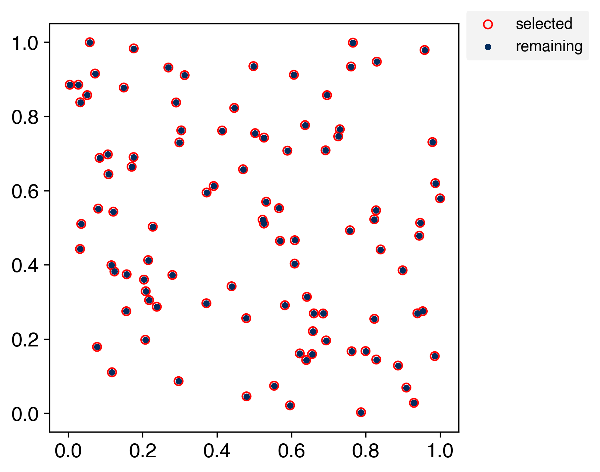
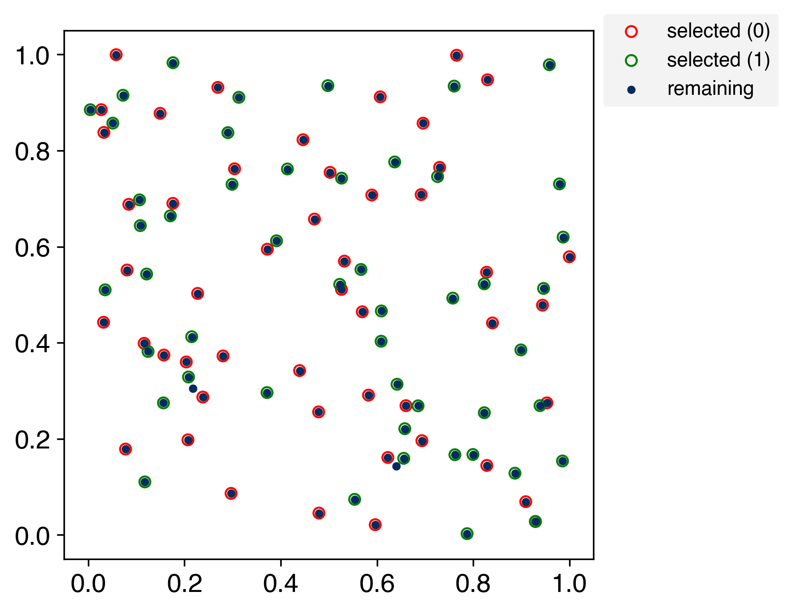

Simulation#
Visualize the order in which the Kennard–Stone algorithm selects samples from random two-dimensional data.
Kennard-Stone algorithm#
Import modules#
from __future__ import annotations
from array import array
import numpy as np
import matplotlib.axes
import matplotlib.pyplot as plt
from matplotlib.animation import FuncAnimation
from matplotlib import rcParams
from kennard_stone._core._core import _KennardStone
For reproducibility of random number generation#
rng = np.random.RandomState(334)
Two-dimensional random number generation#
example = rng.rand(2, 100)
Create an instance and compute indexes.#
def get_indexes(n_groups: int) -> list[array[int]]:
ks = _KennardStone(n_groups=n_groups)
indexes = ks.get_indexes(example.transpose())
# reverse order to sample from the farthest points first
indexes = [
array("i", reversed(_index))
for _index in ks.get_indexes(example.transpose())
]
return indexes
indexes = get_indexes(n_groups=1)
2026-11-07 18:24:45,283 - kennard_stone.utils._pairwise:115[INFO] - Calculating pairwise distances using scikit-learn.
2026-11-07 18:24:45,285 - kennard_stone.utils._pairwise:115[INFO] - Calculating pairwise distances using scikit-learn.
2026-11-07 18:24:45,290 - kennard_stone.utils._pairwise:115[INFO] - Calculating pairwise distances using scikit-learn.
2026-11-07 18:24:45,291 - kennard_stone.utils._pairwise:115[INFO] - Calculating pairwise distances using scikit-learn.
Set layout of figure.#
rcParams["font.size"] = 13
rcParams["font.family"] = "Helvetica"
Showing in figures#
It can be confirmed that it is possible to take all of them.
# generate figure
fig, ax = plt.subplots(figsize=(6.4, 4.8), facecolor="white", dpi=300)
# 最初の引数は'frame' (何コマ目か)で固定．それ以外の引数はfargsでtupleとして与える．
def scatter(
frame: int, ax: matplotlib.axes.Axes, indexes: list[array[int]]
) -> None:
# Clear all graphs except the first
if frame > 0:
plt.cla()
colors_selected = ("red", "green")
assert len(indexes) <= len(colors_selected)
# scatter
handles = []
labels = []
for i, index in enumerate(indexes):
# selected
_scatter = ax.scatter(
*example[:, index[:frame]],
s=30,
facecolor="None",
edgecolors=colors_selected[i],
)
handles.append(_scatter)
labels.append(f"selected ({i})" if len(indexes) > 1 else "selected")
# remaining
_scatter = ax.scatter(*example[:, index[frame:]], s=10, c="#022c5e")
else:
handles.append(_scatter)
labels.append("remaining")
# set_lim
ax.set_xlim(-0.05, 1.05)
ax.set_ylim(-0.05, 1.05)
# set_aspect
ax.set_aspect("equal", adjustable="box")
# legend
ax.legend(
handles=handles,
labels=labels,
facecolor="#f0f0f0",
edgecolor="None",
fontsize=10,
loc="upper left",
bbox_to_anchor=(1, 1.05),
)
# gif animation
ani = FuncAnimation(
fig, scatter, interval=200, frames=len(indexes[0]), fargs=(ax, indexes)
)
# Save
ani.save("simulate.gif")

Extended Kennard-stone (multi-class)#
indexes = get_indexes(n_groups=2)
2026-11-07 18:25:08,353 - kennard_stone.utils._pairwise:115[INFO] - Calculating pairwise distances using scikit-learn.
2026-11-07 18:25:08,355 - kennard_stone.utils._pairwise:115[INFO] - Calculating pairwise distances using scikit-learn.
2026-11-07 18:25:08,358 - kennard_stone.utils._pairwise:115[INFO] - Calculating pairwise distances using scikit-learn.
2026-11-07 18:25:08,360 - kennard_stone.utils._pairwise:115[INFO] - Calculating pairwise distances using scikit-learn.
# generate figure
fig, ax = plt.subplots(figsize=(6.4, 4.8), facecolor="white", dpi=300)
# gif animation
ani = FuncAnimation(
fig, scatter, interval=200, frames=len(indexes[0]), fargs=(ax, indexes)
)
# Save
ani.save("simulate_multi.gif")
